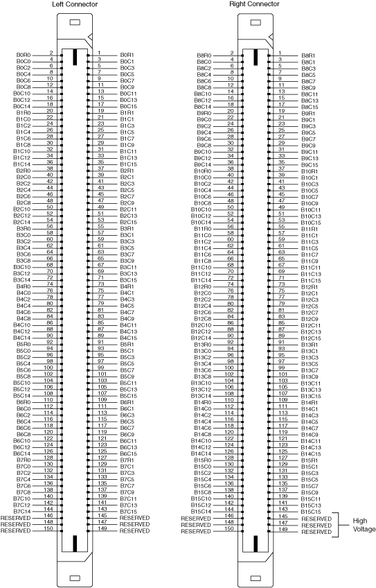

The NI TB-2646B terminal block creates a 1-wire quad 4×32 matrix topology with the NI PXI/PXIe-2532B (NI 2532B).The following figure represents the NI 2532/2532B in the 1-wire quad 4×32 matrix topology.
Both the scanning command, b0r2->b0c1;, and the immediate operation, niSwitch Connect Channels VI or the niSwitch_Connect function with parameters b0r2 and b0c1, results in the following connection:
signal connected to B0R2 is routed to B0C1.
|
Note While you can, for example, connect B0R1 to B0C0, you cannot connect B0R1 directly to B1C1 in this topology. |
The NI TB-2646B terminal block connects banks of the NI 2532B to create the 1-wire quad 4×32 matrix topology. The following figure illustrates how the sixteen native banks of the NI 2532B connect using the NI TB-2646B to create the 1-wire quad 4×32 matrix topology.
The following tables list the pin assignments for the NI TB-2646B column ribbon cable headers.
The following table refers to the J13 connector on the NI TB-2646B.
| Pin Number | Column | Pin Number | Column | Pin Number | Column | Pin Number | Column |
|---|---|---|---|---|---|---|---|
| Pin 1 | B3C31 | Pin 9 | B3C27 | Pin 17 | B3C23 | Pin 25 | B3C19 |
| Pin 2 | B1C31 | Pin 10 | B1C27 | Pin 18 | B1C23 | Pin 26 | B1C19 |
| Pin 3 | B3C30 | Pin 11 | B3C26 | Pin 19 | B3C22 | Pin 27 | B3C18 |
| Pin 4 | B1C30 | Pin 12 | B1C26 | Pin 20 | B1C22 | Pin 28 | B1C18 |
| Pin 5 | B3C29 | Pin 13 | B3C25 | Pin 21 | B3C21 | Pin 29 | B3C17 |
| Pin 6 | B1C29 | Pin 14 | B1C25 | Pin 22 | B1C21 | Pin 30 | B1C17 |
| Pin 7 | B3C28 | Pin 15 | B3C24 | Pin 23 | B3C20 | Pin 31 | B3C16 |
| Pin 8 | B1C28 | Pin 16 | B1C24 | Pin 24 | B1C20 | Pin 32 | B1C16 |
The following table refers to the J12 connector on the NI TB-2646B.
| Pin Number | Column | Pin Number | Column | Pin Number | Column | Pin Number | Column |
|---|---|---|---|---|---|---|---|
| Pin 1 | B3C15 | Pin 9 | B3C11 | Pin 17 | B3C7 | Pin 25 | B3C3 |
| Pin 2 | B1C15 | Pin 10 | B1C11 | Pin 18 | B1C7 | Pin 26 | B1C3 |
| Pin 3 | B3C14 | Pin 11 | B3C10 | Pin 19 | B3C6 | Pin 27 | B3C2 |
| Pin 4 | B1C14 | Pin 12 | B1C10 | Pin 20 | B1C6 | Pin 28 | B1C2 |
| Pin 5 | B3C13 | Pin 13 | B3C9 | Pin 21 | B3C5 | Pin 29 | B3C1 |
| Pin 6 | B1C13 | Pin 14 | B1C9 | Pin 22 | B1C5 | Pin 30 | B1C1 |
| Pin 7 | B3C12 | Pin 15 | B3C8 | Pin 23 | B3C4 | Pin 31 | B3C0 |
| Pin 8 | B1C12 | Pin 16 | B1C8 | Pin 24 | B1C4 | Pin 32 | B1C0 |
The following table refers to the J3 connector on the NI TB-2646B.
| Pin Number | Column | Pin Number | Column | Pin Number | Column | Pin Number | Column |
|---|---|---|---|---|---|---|---|
| Pin 1 | B0C0 | Pin 9 | B0C4 | Pin 17 | B0C8 | Pin 25 | B0C12 |
| Pin 2 | B2C0 | Pin 10 | B2C4 | Pin 18 | B2C8 | Pin 26 | B2C12 |
| Pin 3 | B0C1 | Pin 11 | B0C5 | Pin 19 | B0C9 | Pin 27 | B0C13 |
| Pin 4 | B2C1 | Pin 12 | B2C5 | Pin 20 | B2C9 | Pin 28 | B2C13 |
| Pin 5 | B0C2 | Pin 13 | B0C6 | Pin 21 | B0C10 | Pin 29 | B0C14 |
| Pin 6 | B2C2 | Pin 14 | B2C6 | Pin 22 | B2C10 | Pin 30 | B2C14 |
| Pin 7 | B0C3 | Pin 15 | B0C7 | Pin 23 | B0C11 | Pin 31 | B0C15 |
| Pin 8 | B2C3 | Pin 16 | B2C7 | Pin 24 | B2C11 | Pin 32 | B2C15 |
The following table refers to the J2 connector on the NI TB-2646B.
| Pin Number | Column | Pin Number | Column | Pin Number | Column | Pin Number | Column |
|---|---|---|---|---|---|---|---|
| Pin 1 | B0C16 | Pin 9 | B0C20 | Pin 17 | B0C24 | Pin 25 | B0C28 |
| Pin 2 | B2C16 | Pin 10 | B2C20 | Pin 18 | B2C24 | Pin 26 | B2C28 |
| Pin 3 | B0C17 | Pin 11 | B0C21 | Pin 19 | B0C25 | Pin 27 | B0C29 |
| Pin 4 | B2C17 | Pin 12 | B2C21 | Pin 20 | B2C25 | Pin 28 | B2C29 |
| Pin 5 | B0C18 | Pin 13 | B0C22 | Pin 21 | B0C26 | Pin 29 | B0C30 |
| Pin 6 | B2C18 | Pin 14 | B2C22 | Pin 22 | B2C26 | Pin 30 | B2C30 |
| Pin 7 | B0C19 | Pin 15 | B0C23 | Pin 23 | B0C27 | Pin 31 | B0C31 |
| Pin 8 | B2C19 | Pin 16 | B2C23 | Pin 24 | B2C27 | Pin 32 | B2C31 |
The NI TB-2646B provides two ribbon cable headers for row connection. Use one cable header to connect to your application. Use the other cable header for column expansion.
The following tables list the pin assignments for the row connections.
The following table refers to the J9 connector on the NI TB-2646B.
| Pin Number | Row |
|---|---|
| 1 | B1R0 |
| 2 | B3R0 |
| 3 | B1R1 |
| 4 | B3R1 |
| 5 | B1R2 |
| 6 | B3R2 |
| 7 | B1R3 |
| 8 | B3R3 |
| 9 | B0R0 |
| 10 | B2R0 |
| 11 | B0R1 |
| 12 | B2R1 |
| 13 | B0R2 |
| 14 | B2R2 |
| 15 | B0R3 |
| 16 | B2R3 |
The following table refers to the J4 connector on the NI TB-2646B.
| Pin Number | Row |
|---|---|
| 1 | B0R0 |
| 2 | B2R0 |
| 3 | B0R1 |
| 4 | B2R1 |
| 5 | B0R2 |
| 6 | B2R2 |
| 7 | B0R3 |
| 8 | B2R3 |
| 9 | B1R0 |
| 10 | B3R0 |
| 11 | B1R1 |
| 12 | B3R1 |
| 13 | B1R2 |
| 14 | B3R2 |
| 15 | B1R3 |
| 16 | B3R3 |
Each row signal is isolated from the reed relays through a 100 Ω resistor. To bypass this resistor, install a jumper on the appropriate pins of the header indicated in the table below. The following table lists the appropriate jumper position for bypassing the resistor on each row signal.
| Bypassed Row | NI TB-2646B | |
|---|---|---|
| Header | Pins Connected | |
| B0R0 | J14 | 1-2 |
| B2R0 | J14 | 3-4 |
| B0R1 | J14 | 5-6 |
| B2R1 | J14 | 7-8 |
| B0R2 | J14 | 9-10 |
| B2R2 | J14 | 11-12 |
| B0R3 | J14 | 13-14 |
| B2R3 | J14 | 15-16 |
| B1R0 | J15 | 1-2 |
| B3R0 | J15 | 3-4 |
| B1R1 | J15 | 5-6 |
| B3R1 | J15 | 7-8 |
| B1R2 | J15 | 9-10 |
| B3R2 | J15 | 11-12 |
| B1R3 | J15 | 13-14 |
| B3R3 | J15 | 15-16 |
The following figure identifies the pins for the NI 2532B.

 |
Caution Do not connect to RESERVED pins. |